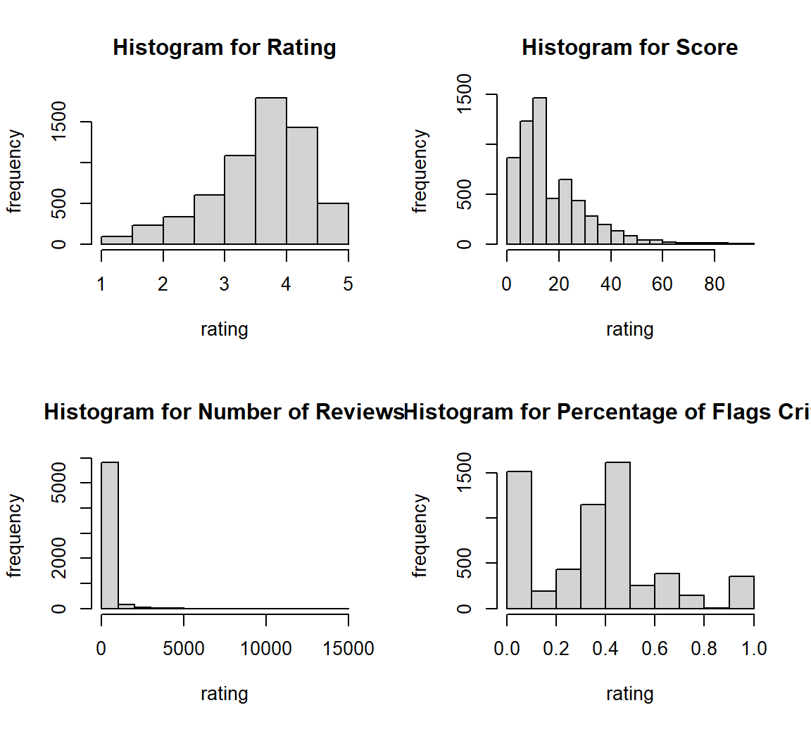
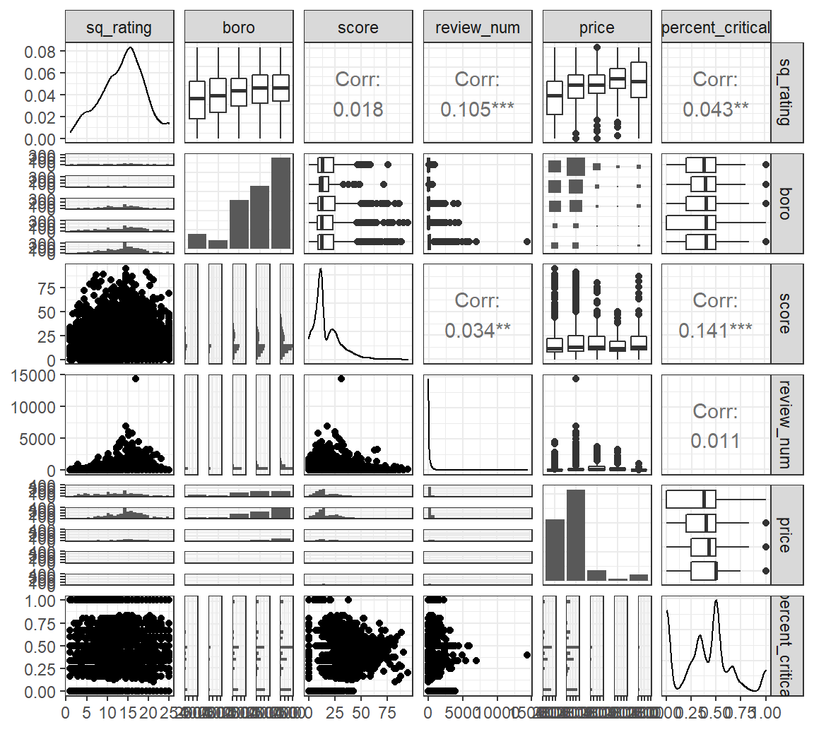
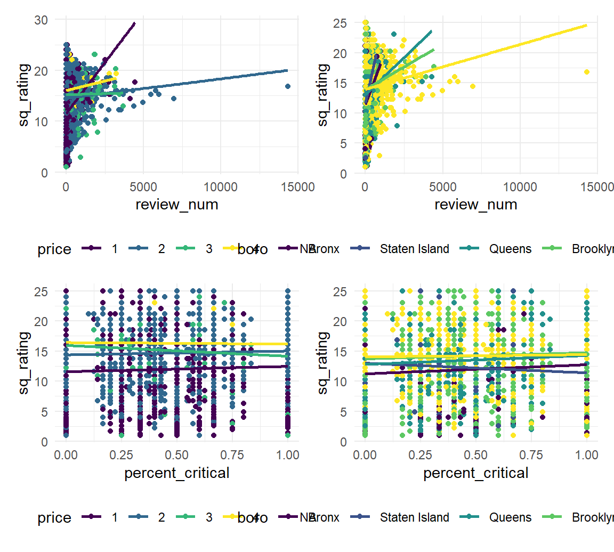
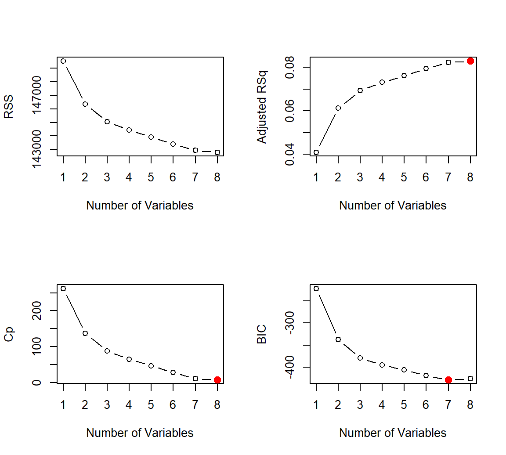

Statistical Analysis
2022-12-09
Regression model
Now, we perform regression analysis from our data treating “rating” as the response variable of interest.
Data Wrangling and Transformation
In this step, we check whether our data satisfies the normality assumptions for multiple linear regression and perform transformations to fit the assumptions if unsatisfied.
# sided histogram for each untransformed numeric variable
par(mfrow = c(2, 2))
hist(df$rating, main = "Histogram for Rating", xlab = "rating", ylab = "frequency")
hist(df$score, main = "Histogram for Score", xlab = "rating", ylab = "frequency")
hist(df$review_num, main = "Histogram for Number of Reviews", xlab = "rating", ylab = "frequency")
hist(df$percent_critical, main = "Histogram for Percentage of Flags Critical", xlab = "rating", ylab = "frequency")
As shown in the histograms, rating is severely positively-skewed, percent_critical_flag is slightly positively skewed, score is moderately positively-skewed, and rating is negatively skewed. However, MLR only requires the assumption that the response variable be normally distributed. Therefore, we square-transform the rating variable and use a QQ plot to confirm that normality is not severely violated.
# square-transform rating
reg_df = df %>%
filter(!is.na(score)) %>%
mutate(sq_rating = rating^2) %>%
ungroup() %>%
select(sq_rating, boro, score, review_num, price, percent_critical)
# side-by-side qq-plot for transformed numeric variables
qqnorm(reg_df$sq_rating, main = "Normal QQ Plot: Squared Rating", pch = 0.01, frame = FALSE)
qqline(reg_df$sq_rating, col = "steelblue")Selecting Model Based on Predictor Prognosis
Next, we check for correlation between continuous independent variables and interaction between other independent variables.
library("ggplot2")
library("GGally")
reg_df %>%
ggpairs() + theme_bw()
Thus, we expect review_num, percent_critical, price, and boro to be significant predictors for sq_rating. For continuous independent variables, we expect statistically significant correlation between score and percent_critical. Now, we assess the interaction between review_num and price range; review_num and boro; percent_critical and price range; and percent_critical and boro.
# review_num and price
p1 = reg_df %>%
ggplot(aes(x = review_num, y = sq_rating, color = price)) +
geom_point() +
geom_smooth(method="lm", se=F, aes(group = price, color = price))
# review_num and boro
p2 = reg_df %>%
ggplot(aes(x = review_num, y = sq_rating, color = boro)) +
geom_point() +
geom_smooth(method="lm", se=F, aes(group = boro, color = boro))
# percent_critical and price
p3 = reg_df %>%
ggplot(aes(x = percent_critical, y = sq_rating, color = price)) +
geom_point() +
geom_smooth(method = "lm", se = F, aes(group = price, color = price))
# percent_critical and boro
p4 = reg_df %>%
ggplot(aes(x = percent_critical, y = sq_rating, color = boro)) +
geom_point() +
geom_smooth(method = "lm", se = F, aes(group = boro, color = boro))
# Display results
p1+p2+p3+p4
As such, we observe strong interaction between review_num, borough, and price; but little interaction between percent_critical and price or percent_critical and borough. Therefore, we fit our first model with interaction of review_num, borough, and price along with percent_critical.
fit_1 = lm(sq_rating ~ price * review_num + boro + percent_critical, data = reg_df)
# display results
fit_1 %>% broom::tidy() %>% knitr::kable(digits = 4)| term | estimate | std.error | statistic | p.value |
|---|---|---|---|---|
| (Intercept) | 10.0361 | 0.2809 | 35.7261 | 0.0000 |
| price2 | 2.9284 | 0.1549 | 18.9109 | 0.0000 |
| price3 | 3.5475 | 0.3492 | 10.1598 | 0.0000 |
| price4 | 4.4344 | 0.7139 | 6.2116 | 0.0000 |
| review_num | 0.0038 | 0.0005 | 8.1660 | 0.0000 |
| boroStaten Island | 0.1144 | 0.4222 | 0.2709 | 0.7865 |
| boroQueens | 1.2008 | 0.2955 | 4.0631 | 0.0000 |
| boroBrooklyn | 1.8083 | 0.2877 | 6.2850 | 0.0000 |
| boroManhattan | 1.3947 | 0.2840 | 4.9112 | 0.0000 |
| percent_critical | 0.5989 | 0.2433 | 2.4618 | 0.0139 |
| price2:review_num | -0.0035 | 0.0005 | -7.0893 | 0.0000 |
| price3:review_num | -0.0037 | 0.0007 | -5.7044 | 0.0000 |
| price4:review_num | -0.0032 | 0.0010 | -3.1157 | 0.0018 |
Criterion-Based Approach and Backward Elimination to Model Selection
We now turn our attention to formal methods of choosing optimal model. Since the number of our predictor is not huge, we employ a criterion-based approach to select independent variables.
library(leaps)
b = regsubsets(sq_rating ~ ., data = reg_df)
rs = summary(b)
par(mfrow = c(2, 2))
plot(rs$rss, xlab = "Number of Variables", ylab = "RSS", type = "b")
plot(rs$adjr2, xlab = "Number of Variables", ylab = "Adjusted RSq", type = "b")
best_adj_r2 = which.max(rs$adjr2) # 4 (index)
points(best_adj_r2, rs$adjr2[best_adj_r2], # point(x, y)
col = "red",cex = 2, pch = 20)
plot(rs$cp, xlab = "Number of Variables", ylab = "Cp", type = 'b')
best_cp = which.min(rs$cp)
points(best_cp, rs$cp[best_cp],
col = "red", cex = 2, pch = 20)
plot(rs$bic, xlab = "Number of Variables", ylab = "BIC", type = 'b')
best_bic = which.min(rs$bic)
points(best_bic, rs$bic[best_bic],
col = "red", cex = 2, pch = 20)
As such, both the Cp criterion and the Adjusted \(R^2\) suggests that we should consider all parameters. We fit a model accounting for all independent variables in the regression dataset.
fit_2 <- lm(sq_rating ~ ., data = reg_df)
fit_2 %>% broom::tidy() %>% knitr::kable(digits = 4)| term | estimate | std.error | statistic | p.value |
|---|---|---|---|---|
| (Intercept) | 10.2961 | 0.2889 | 35.6448 | 0.0000 |
| boroStaten Island | 0.1613 | 0.4241 | 0.3803 | 0.7037 |
| boroQueens | 1.2678 | 0.2967 | 4.2733 | 0.0000 |
| boroBrooklyn | 1.8939 | 0.2887 | 6.5594 | 0.0000 |
| boroManhattan | 1.5392 | 0.2845 | 5.4103 | 0.0000 |
| score | -0.0028 | 0.0051 | -0.5499 | 0.5824 |
| review_num | 0.0006 | 0.0001 | 4.2582 | 0.0000 |
| price2 | 2.5298 | 0.1440 | 17.5708 | 0.0000 |
| price3 | 2.9820 | 0.2923 | 10.2034 | 0.0000 |
| price4 | 4.0965 | 0.6204 | 6.6035 | 0.0000 |
| percent_critical | 0.6048 | 0.2467 | 2.4520 | 0.0142 |
Finally, since the “score” variable comes out to be not significantly correlated with the response variable sq_rating under any circumstances, we consider the backwards approach to see eliminating it would create more efficiency for the model.
step(fit_2, direction = "backward") ## Start: AIC=18400.98
## sq_rating ~ boro + score + review_num + price + percent_critical
##
## Df Sum of Sq RSS AIC
## - score 1 7.6 142793 18399
## <none> 142785 18401
## - percent_critical 1 150.7 142936 18405
## - review_num 1 454.4 143240 18417
## - boro 4 1502.8 144288 18453
## - price 3 8650.7 151436 18731
##
## Step: AIC=18399.28
## sq_rating ~ boro + review_num + price + percent_critical
##
## Df Sum of Sq RSS AIC
## <none> 142793 18399
## - percent_critical 1 144.2 142937 18403
## - review_num 1 452.0 143245 18415
## - boro 4 1502.9 144296 18451
## - price 3 8648.3 151441 18729##
## Call:
## lm(formula = sq_rating ~ boro + review_num + price + percent_critical,
## data = reg_df)
##
## Coefficients:
## (Intercept) boroStaten Island boroQueens boroBrooklyn
## 1.026e+01 1.675e-01 1.267e+00 1.896e+00
## boroManhattan review_num price2 price3
## 1.539e+00 6.314e-04 2.525e+00 2.978e+00
## price4 percent_critical
## 4.099e+00 5.859e-01In this way, we fit this model selected by the backwards approach. From the results of this model shown below, all predictors are significant except the boro of Staten Island.
fit_3 <- lm(sq_rating ~ boro + review_num + price + percent_critical, data = reg_df)
# display result
fit_3 %>% broom::tidy() %>% knitr::kable(digits = 4)| term | estimate | std.error | statistic | p.value |
|---|---|---|---|---|
| (Intercept) | 10.2580 | 0.2804 | 36.5845 | 0.0000 |
| boroStaten Island | 0.1675 | 0.4240 | 0.3951 | 0.6928 |
| boroQueens | 1.2667 | 0.2967 | 4.2701 | 0.0000 |
| boroBrooklyn | 1.8959 | 0.2887 | 6.5674 | 0.0000 |
| boroManhattan | 1.5394 | 0.2845 | 5.4115 | 0.0000 |
| review_num | 0.0006 | 0.0001 | 4.2475 | 0.0000 |
| price2 | 2.5252 | 0.1437 | 17.5699 | 0.0000 |
| price3 | 2.9777 | 0.2921 | 10.1929 | 0.0000 |
| price4 | 4.0990 | 0.6203 | 6.6081 | 0.0000 |
| percent_critical | 0.5859 | 0.2442 | 2.3988 | 0.0165 |
Cross Validation
Model Comparison
In this step, we perform cross-validation to compare our three models in terms of cross-validation prediction error.
library(modelr)
cv_df <- crossv_mc(reg_df, n = 100) %>%
mutate(
train = map(train, as_tibble),
test = map(test, as_tibble)) %>%
mutate(
fit_1 = map(train, ~lm(sq_rating ~ price * review_num + boro + percent_critical, data = .x)),
fit_2 = map(train, ~lm(sq_rating ~ ., data = .x)),
fit_3 = map(train, ~lm(sq_rating ~ boro + review_num + price + percent_critical, data = .x))
) %>%
mutate(
rmse_fit_1 = map2_dbl(fit_1, test, ~rmse(model = .x, data = .y)),
rmse_fit_2 = map2_dbl(fit_2, test, ~rmse(model = .x, data = .y)),
rmse_fit_3 = map2_dbl(fit_3, test, ~rmse(model = .x, data = .y))
)
# Display RMSE results
cv_df %>%
summarise(fit1_mean_error = mean(rmse_fit_1),
fit2_mean_error = mean(rmse_fit_2),
fit3_mean_error = mean(rmse_fit_3)) %>%
knitr::kable(digits = 3)| fit1_mean_error | fit2_mean_error | fit3_mean_error |
|---|---|---|
| 5.006 | 5.027 | 5.026 |
# Show the distribution of RMSEs using violin plots
cv_df %>%
select(starts_with("rmse")) %>%
pivot_longer(
everything(),
names_to = "model",
values_to = "rmse",
names_prefix = "rmse") %>%
mutate(model = fct_inorder(model)) %>%
ggplot(aes(x = model, y = rmse)) +
geom_violin()
Elastic Net
As seen, fit_1 has the least RMSE compared to all other models. Therefore, we use this model for further training using elastic net.
library(glmnet)
library(caret)
set.seed(2)
cv_10 = trainControl(method = "cv", number = 10)
x = model.matrix(~ ., dplyr::select(reg_df, -sq_rating))[,-1]
y = reg_df$sq_rating
elnet_int = train(
sq_rating ~ price * review_num + boro + percent_critical, data = reg_df %>% drop_na(),
method = "glmnet",
trControl = cv_10,
tuneLength = 10
)
get_best_result = function(caret_fit) {
best = which(rownames(caret_fit$results) == rownames(caret_fit$bestTune))
best_result = caret_fit$results[best, ]
rownames(best_result) = NULL
best_result
}
get_best_result(elnet_int)## alpha lambda RMSE Rsquared MAE RMSESD RsquaredSD
## 1 0.1 0.01394185 4.987076 0.09035658 3.979805 0.06767828 0.0152395
## MAESD
## 1 0.06477483Model Diagnostics
In this final step, we perform model diagnostics to see if assumptions are satisfied for our chosen, optimal model. Specifically, we assess whether our model of choice violates the assumptions of linear regression model, including multicollinearity by using VIF values, non-linearity, unequal error variances.
Residual vs. Fitted Plot
# Plot model residuals against fitted values
plot(fit_1)

The residuals do not “bounce randomly” around the 0 line, suggesting that the assumption that the relationship is linear is not reasonable.
The residuals do not roughly form a “horizontal band” around 0, which suggests violations for equal variance assumption.
There are a few outliers in our plot, suggesting there are influential points or outliers.
Multicolinearity
Since our optimal model contains interaction terms, which may inflate VIF, we check for fit_2, which includes all predictor variables and no interaction terms.
library(performance)
multicollinearity(fit_2) %>% as_tibble() %>% knitr::kable(digits = 4)| Term | VIF | VIF_CI_low | VIF_CI_high | SE_factor | Tolerance | Tolerance_CI_low | Tolerance_CI_high |
|---|---|---|---|---|---|---|---|
| boro | 1.0931 | 1.0670 | 1.1295 | 1.0455 | 0.9148 | 0.8854 | 0.9372 |
| score | 1.0276 | 1.0103 | 1.0742 | 1.0137 | 0.9731 | 0.9309 | 0.9898 |
| review_num | 1.0888 | 1.0630 | 1.1252 | 1.0435 | 0.9184 | 0.8888 | 0.9407 |
| price | 1.0876 | 1.0619 | 1.1240 | 1.0429 | 0.9194 | 0.8897 | 0.9417 |
| percent_critical | 1.0218 | 1.0063 | 1.0752 | 1.0109 | 0.9786 | 0.9300 | 0.9937 |
As such, we may be confident in saying that there is no significant violation for collinearity assumption.